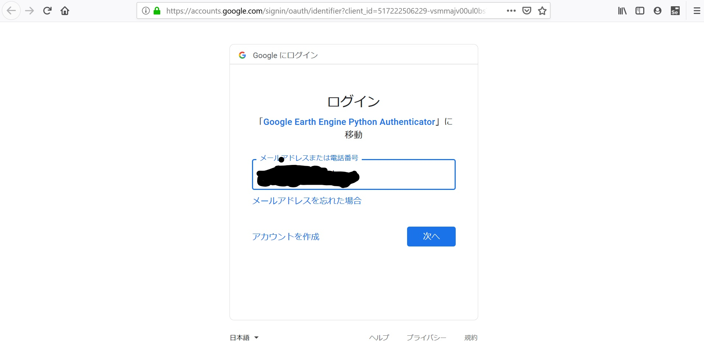
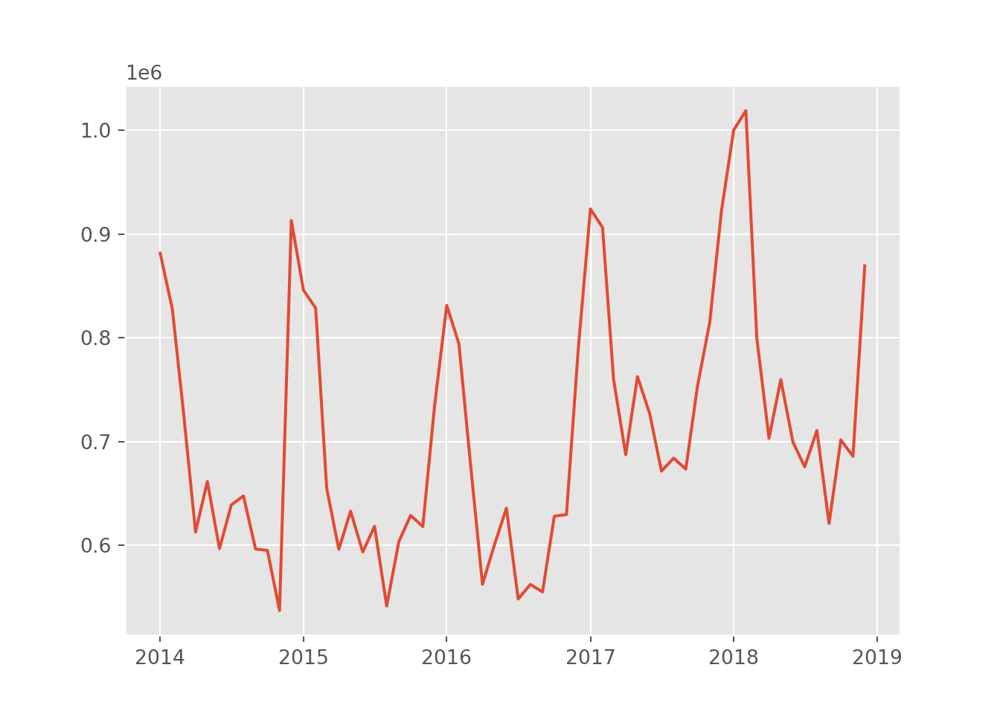

Google Earth Engine APIで衛星画像データを取得し、景況感をナウキャスティングしてみる
皆さんおはこんばんにちわ。前回、GPLVMモデルを用いたGDP予測モデルを構築しました。ただ、ナウキャスティングというからにはオルタナティブデータを用いた解析を行いたいところではあります。ふと、以下の記事を見つけました。
焦点：ナウキャストのＧＤＰ推計、世界初の衛星画像利用 利用拡大も
こちらは東京大学の渡辺努先生が人工衛星画像を用いてGDP予測モデルを開発したというものです。記事には
米国の海洋大気庁が運営する気象衛星「スオミＮＰＰ」が日本上空を通過する毎日午前１時３０分時点の画像を購入し、縦、横７２０メートル四方のマス目ごとの明るさを計測する。同じ明るさでも、農地、商業用地、工業用地など土地の用途によって経済活動の大きさが異なるため、国土地理院の土地利用調査を参照。土地の用途と、明るさが示す経済活動の相関を弾き出し、この結果を考慮した上で、明るさから経済活動の大きさを試算する。 （中略）衛星画像のように誰もが入手可能な公表データであれば、政府、民間の区別なく分析が可能であるため、渡辺氏はこれを「統計の民主化」と呼び、世界的な潮流になると予想している。
と書かれており、衛星写真を用いた分析に興味を惹かれました。 衛星写真って誰でも利用可能か？というところですが、GoogleがEarth Engineというサービスを提供していることがわかりました。

https://earthengine.google.com/
（拙訳）Google Earth Engineは、数ペタバイトの衛星画像群と地理空間データセットを惑星規模の解析機能と組み合わせ、科学者、研究者、開発者が変化を検出し、傾向を射影し、地球の変容を定量化することを可能にします。
研究・教育・非営利目的ならば、なんと無料で衛星写真データを解析することができます。具体的に何ができるのかは以下の動画を見てください。
今回はそんなEath Engineのpython APIを用いて衛星画像データを取得し、解析していきたいと思います。
1. Earth Engineを使うための事前準備
Earth Engineを使用するためには、Google Accountを使って申請を行う必要があります。先ほどの画像の右上の「Sign Up」からできます。申請を行って、Gmailに以下のようなメールが来るととりあえずEarth Engineは使用できるようになります。

とりあえずというのはWEB上のEarth Engine コードエディタは使用できるということです。コードエディタというのは以下のようなもので、ブラウザ上でデータを取得したり、解析をしたり、解析結果をMAPに投影したりすることができる便利ツールです。Earth Engineの本体はむしろこいつで、APIは副次的なものと考えています。

真ん中のコードエディタにコードを打っていきますが、言語はjavascriptです(APIはpythonとjavascript両方あるんですけどね)。解析結果をMAPに投影したり、reference（左）を参照したり、Consoleに吐き出したデータを確認することができるのでかなり便利です。が、データを落とした後で高度な解析を行いたい場合はpythonを使ったほうが慣れているので今回はAPIを使用しています。
話が脱線しました。さて、Earth Engineの承認を得たら、pipでearthengine-apiをインストールしておきます。そして、コマンドプロンプト上で、earthengine authenticateと打ちます。そうすると、勝手にブラウザが立ち上がり、以下のようにpython apiのauthenticationを行う画面がでますので「次へ」を押下します。

次に以下のような画面にいきますので、そのまま承認します。これでauthenticationの完成です。pythonからAPIが使えます。

2. Python APIを用いた衛星画像データの取得
Python APIを使用する準備ができました。ここからは衛星画像データを取得していきます。以下にあるようにEarth Engineにはたくさんのデータセットが存在します。
https://developers.google.com/earth-engine/datasets/
今回はVIIRS Stray Light Corrected Nighttime Day/Night Band Composites Version 1というデータセットを使用します。このデータセットは世界中の夜間光の光量を月次単位で平均し、提供するものです。サンプル期間は2014-01~現在です。
Earth Engineにはいくつかの固有なデータ型が存在します。覚えておくべきものは以下の3つです。
Image…
ある１時点におけるrasterデータです。imageオブジェクトはいくつかのbandで構成されています。このbandはデータによって異なりますが、おおよそのデータはbandそれぞれがRGB値を表していたりします。Earth Engineを使用する上で最も基本的なデータです。
ImageCollection…
Imageオブジェクトを時系列に並べたオブジェクトです。今回は時系列解析をするのでこのデータを使用します。
FeatureCollection…
GeoJSON Featureです。地理情報を表すGeometryオブジェクトやそのデータのプロパティ（国名等）が格納されています。今回は日本の位置情報を取得する際に使用しています。
ではコーディングしていきます。まず、日本の地理情報のFeatureCollectionオブジェクトを取得します。地理情報はFusion Tablesに格納されていますので、IDで引っ張りCountryがJapanのものを抽出します。ee.FeatureCollection()の引数にIDを入力すれば簡単に取得できます。
import ee
from dateutil.parser import parse
ee.Initialize()
# get Japan geometory as FeatureCollection from fusion table
japan = ee.FeatureCollection('ft:1tdSwUL7MVpOauSgRzqVTOwdfy17KDbw-1d9omPw').filter(ee.Filter.eq('Country', 'Japan'))
次に夜間光の衛星画像を取得してみます。こちらもee.ImageCollection()にデータセットのIDを渡すと取得できます。なお、ここではbandを月次の平均光量であるavg_radに抽出しています。
# get night-light data from earth engine from 2014-01-01 to 2019-01-01
dataset = ee.ImageCollection('NOAA/VIIRS/DNB/MONTHLY_V1/VCMSLCFG').filter(ee.Filter.date('2014-01-01','2019-01-01')).select('avg_rad')
取得した衛星画像を日本周辺に切り出し、画像ファイルとして出力してみましょう。画像ファイルの出力はimageオブジェクトで可能です（そうでないと画像がたくさん出てきてしまいますからね。。。）。今取得したのはImageCollectionオブジェクトですからImageオブジェクトへ圧縮してやる必要があります（上がImageCollectionオブジェクト、下が圧縮されたImageオブジェクト）。

ここでは、ImageCollectionオブジェクトの中にあるのImageオブジェクトの平均値をとってサンプル期間の平均的な画像を出力してみたいと思います。ImageCollection.mean()でできます。また、.visualize({min:0.5})でピクセル値が0.5以上でフィルターをかけています。こうしないと雲と思われるものやゴミ？みたいなものがついてしまいます。次に、ここまで加工した画像データをダウンロードするurlを.getDownloadURLメソッドで取得しています。その際、regionで切り出す範囲をポリゴン値で指定し、scaleでデータの解像度を指定しています（scaleが小さすぎると処理が重すぎるらしくエラーが出て処理できません）。
dataset.mean().visualize(min=0.5).getDownloadURL(dict(name='thumbnail',region=[[[120.3345348936478, 46.853488838010854],[119.8071911436478, 24.598157870729043],[148.6353161436478, 24.75788466523463],[149.3384411436478, 46.61252884462868]]],scale=5000))
取得した画像が以下です。

やはり、東京を中心とした関東圏、大阪を中心とした関西圏、愛知、福岡、北海道（札幌周辺）の光量が多く、経済活動が活発であることがわかります。また、陸内よりも沿岸部で光量が多い地域があることがわかります。これは経済活動とは直接関係しない現象のような気もします。今回は分析対象外ですが、北緯38度を境に北側が真っ暗になるのが印象的です。これは言うまでもなく北朝鮮と韓国の境界線ですから、両国の経済活動水準の差が視覚的にコントラストされているのでしょう。今回使用したデータセットは2014年からのものですが、他のデータセットでは1990年代からのデータが取得できるものもあります（その代わり最近のデータは取れませんが）。それらを用いて朝鮮半島や中国の経済発展を観察するのも面白いかもしれません。
さて、画像は取得できましたがこのままでは解析ができません。ここからは夜間光をピクセル値にマッピングしたデータを取得し、数値的な解析を試みます。ただ、先ほどとはデータ取得の手続きが少し変わります。というのも、今度は日本各地で各ピクセル単位ごとにさまざまな値をとる夜間光を集約し、1つの代用値にしなければならないからです。ピクセルごとの数値を手に入れたところで解析するには手に余ってしまいますからね。イメージは以下のような感じです（Earth Engineサイトから引用）。

先ほど取得した夜間光のImageCollectionのある1時点の衛星画像が左です。その中に日本というRegionが存在し、それをee.Reducerによって定量的に集約（aggregate）します。Earth Engine APIには.reduceRegions()メソッドが用意されていますのでそれを用いればいいです。引数は、reducer=集約方法（ここでは合計値）、collection=集約をかけるregion（FeatureCollectionオブジェクト）、scale=解像度、です。以下では、ImageCollection（dataset）の中にある1番目のImageオブジェクトに.reduceRegions()メソッドをかけています。
# initialize output box
time0 = dataset.first().get('system:time_start');
first = dataset.first().reduceRegions(reducer=ee.Reducer.sum(),collection=japan,scale=1000).set('time_start', time0)
我々は時系列データが欲しいわけですから、ImageCollection内にあるImageそれぞれに対して同じ処理を行う必要があります。Earth Engineにはiterateという便利な関数があり、引数に処理したい関数を渡せばfor文いらずでこの処理を行ってくれます。ここではImageオブジェクトにreduceRegionsメソッドを処理したComputed Objectを以前に処理したものとmergeするmyfuncという関数を定義し、それをiterateに渡しています。最後に、先ほどと同じく生成したデータをgetDownloadURLメソッドを用いてurlを取得しています（ファイル形式はcsv）。
# define reduceRegions function for iteration
def myfunc(image,first):
added = image.reduceRegions(reducer=ee.Reducer.sum(),collection=japan,scale=1000).set('time_start', image.get('system:time_start'))
return ee.FeatureCollection(first).merge(added)
# implement iteration
nightjp = dataset.filter(ee.Filter.date('2014-02-01','2019-01-01')).iterate(myfunc,first)
# get url to download
ee.FeatureCollection(nightjp).getDownloadURL(filetype='csv',selectors=ee.FeatureCollection(nightjp).first().propertyNames().getInfo())
CSVファイルのurlが取得できました。この時系列をプロットして今日は終わりにしたいと思います。 データを読み込むとこんな感じです。
import pandas as pd
import matplotlib.pyplot as plt
plt.style.use('ggplot')
nightjp_csv.head()
## system:index sum Country Unnamed: 3 Unnamed: 4
## 0 2014/1/1 881512.4572 Japan NaN NaN
## 1 2014/2/1 827345.3551 Japan NaN NaN
## 2 2014/3/1 729110.4619 Japan NaN NaN
## 3 2014/4/1 612665.8866 Japan NaN NaN
## 4 2014/5/1 661434.5027 Japan NaN NaN
plt.plot(pd.to_datetime(nightjp_csv['system:index']),nightjp_csv['sum'])

かなり季節性がありますね。冬場は日照時間が少ないこともあって光量が増えているみたいです。それにしても急激な増え方ですが。次回はこのデータと景況感の代理変数となる経済統計を元に統計解析を行いたいと思います。おたのしみに。